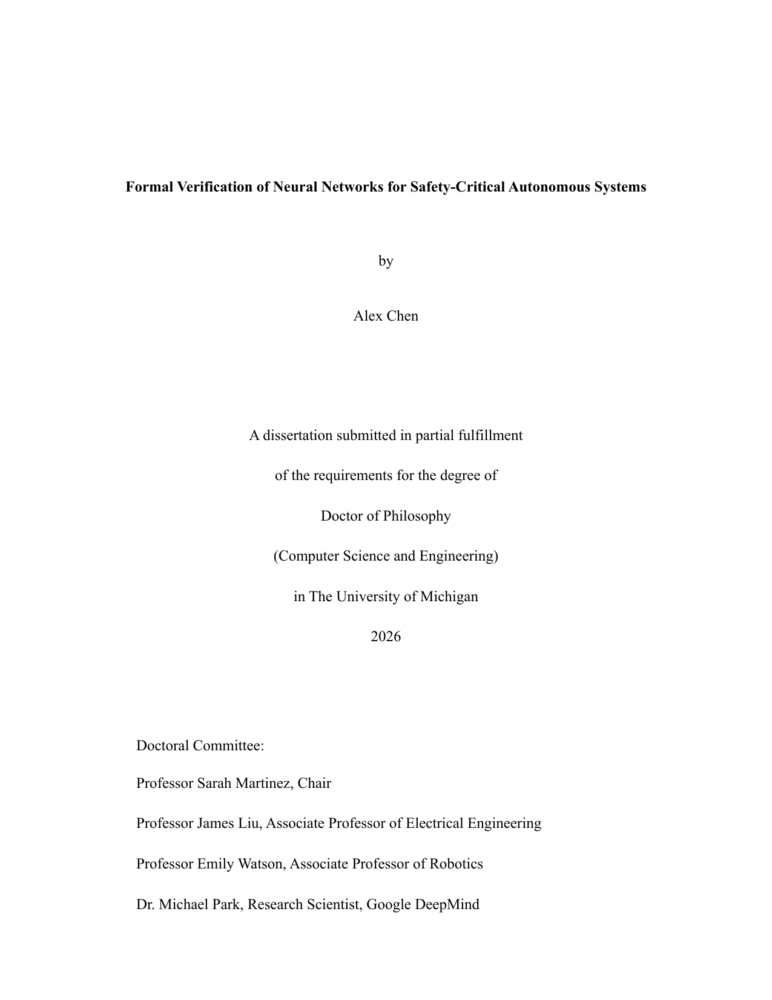
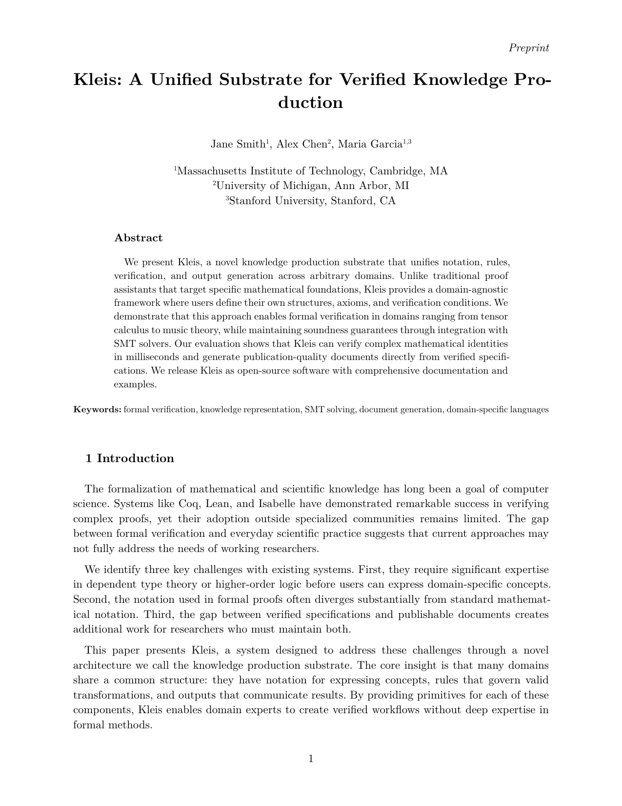
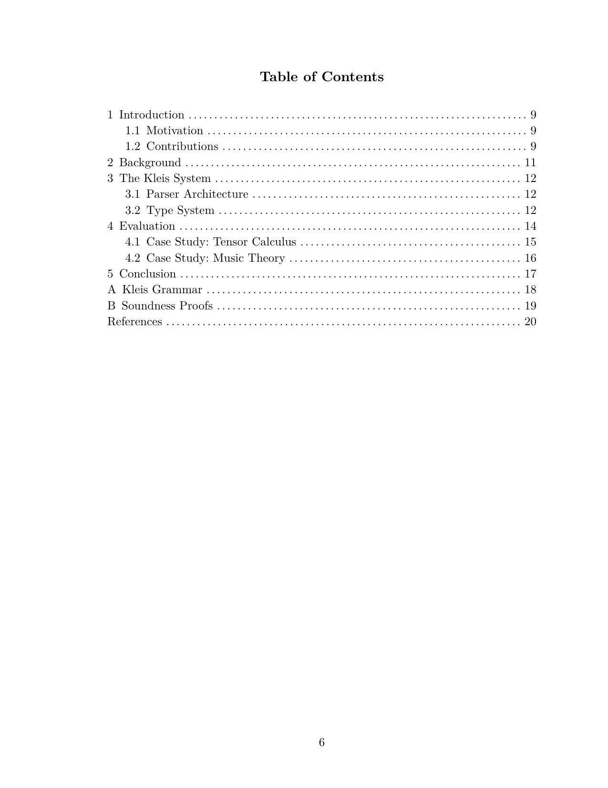

Creating Documents with Kleis
Kleis provides a complete document generation system for creating publication-quality theses, dissertations, and papers. Unlike traditional approaches where documents are separate from code, in Kleis your document IS a program.
The Philosophy: Document = Program
Traditional academic writing separates:
- Code (Jupyter notebooks, Python scripts)
- Equations (LaTeX, copy-pasted)
- Plots (matplotlib, exported as images)
- Document (Word, LaTeX, Google Docs)
This separation causes problems:
- Copy-paste errors between code and paper
- Equations that can’t be re-edited
- Plots that can’t be regenerated
- No verification of mathematical claims
Kleis unifies everything into a single program:
┌─────────────────────────────────────────────────────────────┐
│ Your Document (.kleis file) │
├─────────────────────────────────────────────────────────────┤
│ Template Import │ import "stdlib/templates/mit_thesis" │
│ Metadata │ Title, author, date, abstract │
│ Equations │ MITEquation("label", "$ E = mc^2 $") │
│ Diagrams │ MITDiagram("fig1", "caption", code) │
│ Tables │ MITTable("tab1", "caption", typst) │
│ Chapters │ MITChapter(1, "Introduction", "...") │
│ Compile Function │ compile_mit_thesis(my_thesis) │
└─────────────────────────────────────────────────────────────┘
↓
kleis test my_thesis.kleis
↓
Typst Output
↓
typst compile → PDF
Quick Start
Prerequisites
- Kleis compiled and in PATH
- Typst for PDF generation:
brew install typst
Your First Document (5 minutes)
Create a file my_paper.kleis:
import "stdlib/templates/arxiv_paper.kleis"
// Define your paper
define my_paper = arxiv_paper(
"My Amazing Research", // title
["Alice Smith", "Bob Jones"], // authors
["MIT", "Stanford"], // affiliations
"We present groundbreaking results...", // abstract
["machine learning", "verification"], // keywords
[
ArxivSection("Introduction", "We begin by..."),
ArxivEquation("eq:main", "$ f(x) = x^2 + 1 $"),
ArxivSection("Methods", "Our approach uses..."),
ArxivSection("Conclusion", "We have shown...")
]
)
// Compile and output
example "compile" {
let typst = compile_arxiv_paper(my_paper)
// REQUIRED: typst_raw() makes output unquoted (no "..." around strings)
// Without it, Typst would see quoted strings and fail to parse
out(typst_raw(typst))
}
Generate PDF:
# --raw-output suppresses banners (✅/❌), typst_raw() in code produces unquoted output
kleis test --raw-output --example compile my_paper.kleis > my_paper.typ
typst compile my_paper.typ my_paper.pdf
open my_paper.pdf
That’s it! Your document is a Kleis program.
Emit clean Typst (no quotes, no banners)
- Required: Wrap your compiled document in
typst_raw(...)before callingout(...). This is what makes the output unquoted - without it, strings are printed with quotes ("...") which breaks Typst parsing. - Use
table_typst_raw(...)for tables so Typst code is emitted directly (no ASCII boxes). - Run
kleis test --raw-output --example <compile_example> your_doc.kleisto suppress test banners (✅/❌) and summary lines. - Then pipe to
typst compile.
Important: The --raw-output flag only suppresses banners. The typst_raw() wrapper is what produces unquoted output suitable for Typst.
What --raw-output Suppresses
The --raw-output flag suppresses all test framework output:
- Per-example status lines (passed/failed/skipped)
- Error messages after failed examples
- The summary line (“N examples passed” or “N/M examples passed”)
It does not suppress:
- Output from
out()calls in your example blocks (this is what you want to capture) - Exit code 1 on failure (so CI pipelines still detect errors)
Available Templates
Kleis includes three professionally-styled templates:
| Template | File | Use Case |
|---|---|---|
| MIT Thesis | stdlib/templates/mit_thesis.kleis | MIT PhD dissertations |
| UofM Rackham | stdlib/templates/uofm_thesis.kleis | University of Michigan dissertations |
| arXiv Paper | stdlib/templates/arxiv_paper.kleis | arXiv preprints, conference papers |
Each template includes:
- Proper page margins and fonts per institution guidelines
- Title page, abstract, table of contents
- Chapter/section formatting
- Figure, table, and equation support
- Bibliography formatting
- Appendices
Template Gallery
MIT Thesis:

University of Michigan Dissertation:

arXiv Paper:

MIT Thesis Template
The MIT thesis template follows the official MIT Libraries thesis specifications.
Document Structure
import "stdlib/templates/mit_thesis.kleis"
// Define thesis metadata
define my_thesis = mit_thesis(
"Formal Verification of Knowledge Production Systems", // title
"Jane Smith", // author
"Department of EECS", // department
"May 2026", // date
PhD, // degree: SB, SM, or PhD
"This thesis presents Kleis, a formal verification...", // abstract
"Prof. Alice Chen", // supervisor
"Professor of Computer Science", // supervisor title
"I thank my advisor...", // acknowledgments
"To my family...", // dedication
all_elements // document content
)
Content Elements
// Chapters
define ch1 = MITChapter(1, "Introduction", "Knowledge production relies on...")
// Sections within chapters
define sec1 = MITSection("Motivation", "The need for formal verification...")
// Subsections
define subsec1 = MITSubsection("Historical Context", "Early work in...")
// Equations
define eq_einstein = MITEquation("eq:einstein", "$ E = m c^2 $")
// Figures (with Typst code)
define fig_arch = MITFigure("fig:arch", "System architecture",
"#rect(width: 80%, height: 3cm, fill: luma(240))[Architecture diagram]")
// Diagrams using NATIVE KLEIS data
define iterations = [1.0, 2.0, 3.0, 4.0, 5.0]
define accuracy = [10.0, 25.0, 40.0, 55.0, 70.0]
define fig_perf = MITDiagram("fig:perf", "Performance comparison",
export_typst_fragment(plot(iterations, accuracy, mark = "o"),
xlabel = "Iterations", ylabel = "Accuracy (%)"))
// Tables using NATIVE KLEIS data
define headers = ["Method", "Accuracy", "Runtime"]
define rows = [["Baseline", "72%", "1.2s"], ["Ours", "89%", "0.8s"]]
define tab_results = MITTable("tab:results", "Experimental results",
table_typst_raw(headers, rows))
// References
define ref1 = MITReference("demoura2008",
"de Moura, L. Z3: An Efficient SMT Solver. TACAS 2008.")
// Appendices
define app_a = MITAppendix("Proofs", "Detailed proofs of theorems...")
// Acknowledgments and dedication
define ack = MITAcknowledgments("I thank my advisor...")
define ded = MITDedication("To my family...")
Complete MIT Thesis Example
See the full working example: examples/documents/jane_smith_thesis.kleis
import "stdlib/prelude.kleis"
import "stdlib/templates/mit_thesis.kleis"
// ============================================================================
// JANE SMITH'S PHD THESIS
// ============================================================================
// Chapter 1: Introduction
define ch1 = MITChapter(1, "Introduction",
"Knowledge production in science relies on precise notation and rigorous
verification. Traditional approaches separate these concerns...")
// Key equation
define eq_einstein = MITEquation("eq:einstein", "$ E = m c^2 $")
// Performance diagram using NATIVE KLEIS data
define loc = [100.0, 500.0, 1000.0, 5000.0, 10000.0]
define kleis_time = [0.1, 0.3, 0.5, 1.2, 2.1]
define other_time = [0.2, 0.8, 2.0, 12.0, 45.0]
define fig_performance = MITDiagram("fig:perf", "Type inference performance",
export_typst_fragment(plot(loc, kleis_time, mark = "o", label = "Kleis"),
xlabel = "Lines of Code", ylabel = "Time (seconds)"))
// Results table using NATIVE KLEIS data
define feature_headers = ["Feature", "Kleis", "Lean", "Coq"]
define feature_rows = [
["SMT Integration", "✓", "Partial", "✗"],
["Type Inference", "✓", "✓", "✓"],
["Typst Export", "✓", "✗", "✗"]
]
define table_features = MITTable("tab:features", "Feature comparison",
table_typst_raw(feature_headers, feature_rows))
// Assemble all elements in order
define all_elements = [
ack, // Acknowledgments (front matter)
ded, // Dedication (front matter)
ch1, // Chapter 1
eq_einstein,
fig_performance,
ch2, // Chapter 2
table_features,
ch3, // Chapter 3
ref1, ref2, // References
app_a // Appendix
]
// Create the thesis
define my_thesis = mit_thesis_full(
"Formal Verification of Knowledge Production Systems",
"Jane Smith",
"Department of Electrical Engineering and Computer Science",
"May 2026",
PhD,
"This thesis presents Kleis, a formal verification system...",
"Prof. Alice Chen",
"Professor of Computer Science",
"I thank my advisor Prof. Chen for her guidance...",
"To my parents, who taught me to question everything.",
all_elements
)
// Compile to Typst
example "compile_thesis" {
let typst = compile_mit_thesis(my_thesis)
// Emit raw Typst so there are no quotes/escapes
out(typst_raw(typst))
}
Running the example without banners/quotes: use the raw output mode so the Typst
stream is clean and can be piped directly to typst compile:
./target/release/kleis test examples/documents/jane_smith_thesis.kleis > /tmp/mit_thesis.typ
typst compile /tmp/mit_thesis.typ /tmp/mit_thesis.pdf
What the MIT Template Produces
The compiled thesis includes:
- Title Page - Centered title, author, department, degree, date
- Signature Page - For PhD: supervisor signature block
- Abstract - Formatted per MIT specifications
- Acknowledgments - Optional dedication to advisors, family
- Dedication - Optional short dedication
- Table of Contents - Auto-generated from chapters
- List of Figures - Auto-generated from figures
- List of Tables - Auto-generated from tables
- Chapters - Numbered chapters with sections
- References - Bibliography section
- Appendices - Lettered appendices (A, B, C…)
Table of Contents (auto-generated):

Chapter Content with Equations and Diagrams:

University of Michigan Rackham Template
The UofM template follows Rackham Graduate School formatting guidelines.
Document Structure
import "stdlib/templates/uofm_thesis.kleis"
// Committee members
define committee = [
committee_member("Prof. Alice Chen", "Computer Science"),
committee_member("Prof. Bob Smith", "Mathematics"),
committee_member("Prof. Carol Davis", "Statistics")
]
// Define dissertation
define my_dissertation = umich_dissertation(
"Deep Learning Theory and Applications", // title
"Alex Chen", // author
"Computer Science and Engineering", // program
"2026", // year
PhD, // degree
"This dissertation investigates...", // abstract
"Prof. Alice Chen", // committee chair
"Computer Science and Engineering", // chair affiliation
committee, // committee list
"achen@umich.edu", // email
"0000-0001-2345-6789", // ORCID
"I thank the Rackham Graduate School...", // acknowledgments
"To my mentors...", // dedication
"This work began as...", // preface
all_elements // content
)
UofM-Specific Features
- Double spacing throughout (Rackham requirement)
- Identifier page with ORCID and email
- Committee page with full committee list
- Preface section (optional)
- 2-inch top margin on chapter openings
- Roman numerals for front matter pages
Complete UofM Example
See: examples/documents/alex_chen_dissertation.kleis
Run the provided compile block with raw output to get Typst ready for typst compile:
./target/release/kleis test examples/documents/alex_chen_dissertation.kleis > /tmp/umich.typ
typst compile /tmp/umich.typ /tmp/umich.pdf
arXiv Paper Template
The arXiv template follows common academic paper conventions for preprints.
Document Structure
import "stdlib/templates/arxiv_paper.kleis"
define my_paper = arxiv_paper_full(
"Attention Is All You Need", // title
["Ashish Vaswani", "Noam Shazeer", "Niki Parmar"], // authors
["Google Brain", "Google Brain", "Google Research"], // affiliations
"The dominant sequence transduction models...", // abstract
["transformers", "attention", "neural networks"], // keywords
all_elements // content
)
arXiv Content Elements
// Sections (no chapters in papers)
ArxivSection("Introduction", "Recent advances in...")
ArxivSection("Related Work", "Prior work includes...")
// Equations
ArxivEquation("eq:attention", "$ \\text{Attention}(Q, K, V) = \\text{softmax}(QK^T / \\sqrt{d_k})V $")
// Algorithms (using Typst's algo package)
ArxivAlgorithm("alg:train", "Training procedure", "
#import \"@preview/algorithmic:0.1.0\"
#algorithmic.algorithm({
algorithmic.For(cond: [epoch in 1..N])[
algorithmic.For(cond: [batch in data])[
Compute loss and update
]
]
})
")
// Figures, tables, diagrams (same as MIT)
ArxivFigure("fig:model", "Model architecture", "...")
define result_headers = ["Method", "Accuracy", "Runtime"]
define result_rows = [["Baseline", "72%", "1.2s"], ["Ours", "89%", "0.8s"]]
ArxivTable("tab:results", "Experimental results",
table_typst_raw(result_headers, result_rows))
ArxivDiagram("fig:loss", "Training loss", "...")
// Acknowledgments
ArxivAcknowledgments("We thank the Google Brain team...")
// References
ArxivReference("vaswani2017", "Vaswani et al. Attention Is All You Need. NeurIPS 2017.")
// Appendices
ArxivAppendix("Implementation Details", "We used PyTorch...")
Complete arXiv Example
See: examples/documents/sample_arxiv_paper.kleis
Diagrams and Plots
Kleis integrates with the Lilaq plotting library for creating beautiful diagrams directly in your document.
Native Kleis Data (Recommended)
The most powerful approach uses native Kleis lists with export_typst_fragment():
// Define your data as Kleis lists
define epochs = [1.0, 2.0, 3.0, 4.0, 5.0]
define accuracy = [10.0, 25.0, 45.0, 70.0, 90.0]
// Create a plot using Kleis's native plot() function
define my_plot = plot(epochs, accuracy, mark = "o", label = "Training")
// Convert to Typst code for embedding in a figure
define typst_code = export_typst_fragment(my_plot,
title = "Model Performance",
xlabel = "Epoch",
ylabel = "Accuracy (%)"
)
// Use in your thesis/paper
define fig_training = MITDiagram("fig:training", "Training curves", typst_code)
Note: When piping to typst:
- Use
--raw-outputto suppress test banners (✅/❌) - Use
--example compileto run only the compile example - Ensure your example uses
out(typst_raw(...))for unquoted output
./target/release/kleis test --raw-output --example compile examples/documents/sample_arxiv_paper.kleis > /tmp/paper.typ
typst compile /tmp/paper.typ /tmp/paper.pdf
Why use native data?
- Your data is Kleis—it can be computed, verified, and reused
- No manual Typst syntax errors
- Data can flow from experiments to figures seamlessly
- Easier to update when results change
Available Plot Functions
| Function | Description |
|---|---|
plot(xs, ys) | Line plot |
scatter(xs, ys) | Scatter plot |
bar(xs, heights) | Vertical bar chart |
hbar(xs, widths) | Horizontal bar chart |
Each function accepts optional parameters: label, mark, stroke, etc.
Example: Complete Workflow
// Raw experimental data
define x_data = [0.1, 0.5, 1.0, 5.0, 10.0, 25.0]
define method_a = [150.0, 120.0, 100.0, 80.0, 60.0, 40.0]
define method_b = [180.0, 140.0, 110.0, 85.0, 65.0, 45.0]
// Create plots
define plot_a = plot(x_data, method_a, mark = "o", label = "Method A")
define plot_b = plot(x_data, method_b, mark = "x", label = "Method B")
// Combine into diagram
define comparison_typst = export_typst_fragment(plot_a,
title = "Performance Comparison",
xlabel = "Problem Size",
ylabel = "Time (ms)"
)
// Embed in thesis
define fig_comparison = MITDiagram("fig:comparison",
"Performance comparison between methods",
comparison_typst
)
Fallback: Raw Typst Strings
For complex diagrams not yet supported by native functions, you can use raw Typst strings:
define fig_complex = MITDiagram("fig:complex", "Complex diagram", "
import \"@preview/lilaq:0.5.0\" as lq
lq.diagram(
lq.plot((1, 2, 3, 4), (10, 20, 35, 50), stroke: blue, mark: \"o\"),
lq.plot((1, 2, 3, 4), (15, 30, 42, 55), stroke: red, mark: \"x\"),
xlabel: \"Iteration\",
ylabel: \"Value\"
)")
Tables
Native Kleis Data with table_typst_raw() (Recommended)
The cleanest approach uses Kleis lists with table_typst_raw(), which emits Typst directly (no quotes, no ASCII boxes):
// Define table data as Kleis lists
define headers = ["Method", "Accuracy", "F1 Score"]
define rows = [
["Baseline", "72.3%", "0.71"],
["Ours", "89.7%", "0.88"],
["SOTA", "87.1%", "0.86"]
]
// Generate Typst table code (raw Typst)
define table_code = table_typst_raw(headers, rows)
// Use in your thesis/paper
define tab_results = MITTable("tab:results", "Benchmark results", table_code)
Why use table_typst_raw()?
- Data as Kleis lists—can be computed, imported, or transformed
- No manual Typst table syntax
- Rows can come from experiments or external data
- Easy to add/remove rows programmatically
- Produces clean Typst for piping to
typst compile
Example: Complete Workflow
// Data from experiments
define methods = ["CNN", "ResNet", "Transformer", "Kleis-Net"]
define accuracy = ["72.3%", "85.1%", "87.4%", "89.7%"]
define f1_scores = ["0.71", "0.84", "0.86", "0.88"]
define memory = ["128 MB", "256 MB", "512 MB", "192 MB"]
// Build table from data
define headers = ["Method", "Accuracy", "F1", "Memory"]
define rows = [
["CNN", "72.3%", "0.71", "128 MB"],
["ResNet", "85.1%", "0.84", "256 MB"],
["Transformer", "87.4%", "0.86", "512 MB"],
["Kleis-Net", "89.7%", "0.88", "192 MB"]
]
define tab_comparison = MITTable("tab:comparison",
"Comparison of deep learning methods",
table_typst_raw(headers, rows)
)
Fallback: Raw Typst Strings
For styled tables, you can use raw Typst syntax:
define tab_styled = MITTable("tab:styled", "Styled table", "
#table(
columns: 4,
stroke: 0.5pt,
fill: (col, row) => if row == 0 { luma(230) },
[Feature], [Kleis], [Lean], [Coq],
[SMT], [✓], [Partial], [✗],
[Types], [HM], [Dependent], [Dependent]
)")
Equations
Equations use Typst math syntax (similar to LaTeX):
// Simple equation
MITEquation("eq:simple", "$ x = \\frac{-b \\pm \\sqrt{b^2 - 4ac}}{2a} $")
// Multi-line equation
MITEquation("eq:multi", "$
\\nabla \\cdot E &= \\frac{\\rho}{\\epsilon_0} \\
\\nabla \\cdot B &= 0 \\
\\nabla \\times E &= -\\frac{\\partial B}{\\partial t} \\
\\nabla \\times B &= \\mu_0 J + \\mu_0 \\epsilon_0 \\frac{\\partial E}{\\partial t}
$")
// Inline math in text - just use $...$
MITSection("Methods", "A function $f: RR^n -> RR^m$ maps inputs to outputs.")
// Literal dollar sign - use \$
MITSection("Cost", "The price is \\$100 per unit.")
Common Math Symbols
| Symbol | Typst | Example |
|---|---|---|
| Fraction | frac(a, b) | $ \frac{a}{b} $ |
| Square root | sqrt(x) | $ \sqrt{x} $ |
| Summation | sum_(i=0)^n | $ \sum_{i=0}^n $ |
| Integral | integral_a^b | $ \int_a^b $ |
| Greek | alpha, beta, gamma | α, β, γ |
| Subscript | x_i | $ x_i $ |
| Superscript | x^2 | $ x^2 $ |
| Partial | partial | ∂ |
| Nabla | nabla | ∇ |
💡 Tip: Use the Equation Editor
You don’t have to type Typst syntax manually!
The Kleis Equation Editor is a visual, WYSIWYG tool for building equations. Instead of memorizing frac(a, b) or mat(delim: "[", ...), you:
- Build visually — Click buttons to create fractions, matrices, integrals
- See live preview — The equation renders as you build (powered by Typst)
- Copy and paste — Click “📋 Copy Typst” and paste into your thesis

The Equation Editor showing a type-checked matrix multiplication with rotation matrix. The type indicator confirms: Matrix(2, 2, Scalar).
The workflow:
Visual Editor → 📋 Copy Typst → Paste into thesis.kleis → PDF
Example: Building let A = [1 2 3; 4 5 6] × R_z(θ) × [1 0; 2 1; 2 1] takes seconds visually — versus minutes of typing and debugging Typst syntax.
Note: The Equation Editor requires
kleis serverrunning:kleis server # Server running at http://localhost:3000Then open http://localhost:3000 in your browser. Full documentation coming in a future chapter.
Generating PDFs
Command Line
# Compile Kleis to Typst
# --raw-output: suppresses ✅/❌ banners
# --example compile: runs only the "compile" example block
# Your example must use out(typst_raw(...)) for unquoted output
kleis test --raw-output --example compile my_thesis.kleis > my_thesis.typ
# Compile Typst to PDF
typst compile my_thesis.typ my_thesis.pdf
# Open PDF (macOS)
open my_thesis.pdf
One-liner
kleis test --raw-output --example compile my_thesis.kleis > my_thesis.typ && typst compile my_thesis.typ && open my_thesis.pdf
From Jupyter
Jupyter is the recommended environment for writing your thesis. Here’s a complete workflow:
Cell 1: Setup and check templates
from kleis_kernel import compile_to_pdf, compile_to_typst, list_templates, validate
# See available templates
print("Available templates:", list_templates())
# Output: ['mit_thesis', 'uofm_thesis', 'arxiv_paper']
Cell 2: Validate your document
# Check for parse errors before compiling
validate("my_thesis.kleis")
# Output: ✓ my_thesis.kleis is valid
Cell 3: Generate PDF
# Compile Kleis → Typst → PDF
compile_to_pdf("my_thesis.kleis", "my_thesis.pdf")
# Output: ✓ PDF created: my_thesis.pdf
Cell 4: Display in notebook
from IPython.display import IFrame
IFrame("my_thesis.pdf", width=800, height=600)
Alternative: View Typst output
# See the generated Typst code (useful for debugging)
typst_code = compile_to_typst("my_thesis.kleis")
print(typst_code[:500]) # First 500 chars
Complete Jupyter Workflow Example
# ============================================================
# Thesis Writing Workflow in Jupyter
# ============================================================
from kleis_kernel import compile_to_pdf, validate
from IPython.display import IFrame
import os
# 1. Your thesis file (edit this in VS Code or any text editor)
THESIS_FILE = "my_thesis.kleis"
# 2. Validate before compiling
if validate(THESIS_FILE):
# 3. Generate PDF
compile_to_pdf(THESIS_FILE, "thesis_draft.pdf")
# 4. Display inline
display(IFrame("thesis_draft.pdf", width=800, height=600))
else:
print("Fix the errors above, then re-run this cell")
Tips for Jupyter Users
- Edit
.kleisfiles externally - Use VS Code with syntax highlighting - Use Jupyter for compilation - Quick feedback loop
- Version control - Git works great with
.kleisfiles (they’re plain text) - Hot reload - Re-run the cell after editing your
.kleisfile
Creating Custom Templates
To create a new template (e.g., for IEEE or Nature), create a .kleis file:
// stdlib/templates/ieee_paper.kleis
import "stdlib/prelude.kleis"
// Template metadata
define template_name = "IEEE Paper"
define template_version = "1.0"
define template_type = "paper"
// Data types for document elements
data IEEEDocExpr =
IEEESection(title: String, content: String)
| IEEEEquation(label: String, typst_code: String)
| IEEEFigure(label: String, caption: String, typst_code: String)
| IEEETable(label: String, caption: String, typst_code: String)
| IEEEReference(key: String, citation: String)
// Document container
data IEEEPaper = IEEEPaper(
title: String,
authors: List(String),
affiliations: List(String),
abstract_text: String,
keywords: List(String),
elements: List(IEEEDocExpr)
)
// Typst styling
define typst_ieee_page_setup = "#set page(
paper: \"us-letter\",
margin: (top: 0.75in, bottom: 1in, left: 0.625in, right: 0.625in),
columns: 2
)"
define typst_ieee_text_setup = "#set text(
font: \"Times New Roman\",
size: 10pt
)"
// ... more styling definitions ...
// Compile function
define compile_ieee_paper(paper) =
match paper {
IEEEPaper(title, authors, affiliations, abstract_text, keywords, elements) =>
concat(typst_ieee_page_setup,
concat(typst_ieee_text_setup,
// ... assemble document ...
))
}
No Rust code changes needed! Just add the template file.
Tips for Thesis Writing
- Save frequently — Your
.kleisfile is the source of truth - Use version control —
.kleisfiles are text, perfect for git - Label everything — Use meaningful labels for cross-references
- Test incrementally — Compile often to catch errors early
- Use Lilaq for plots — Regenerable, not static images
- Store in one file — Keep related content together
Troubleshooting
“Typst not found”
# macOS
brew install typst
# Linux
curl -fsSL https://typst.app/install.sh | sh
“Parse error in .kleis file”
Check for:
- Unescaped quotes in strings (use
\") - Missing commas in lists
- Unclosed parentheses
“Figure not rendering”
Ensure Lilaq import is correct in your diagram code:
import "@preview/lilaq:0.5.0" as lq
“Cross-reference not found”
Labels must match exactly:
MITEquation("eq:main", "...") // Define
"See Equation @eq:main" // Reference
Next Steps
- See how documents combine with verification: Applications
- See full examples in
examples/documents/ - Explore Typst documentation: typst.app/docs
- Learn Lilaq plotting: Lilaq on Typst Universe